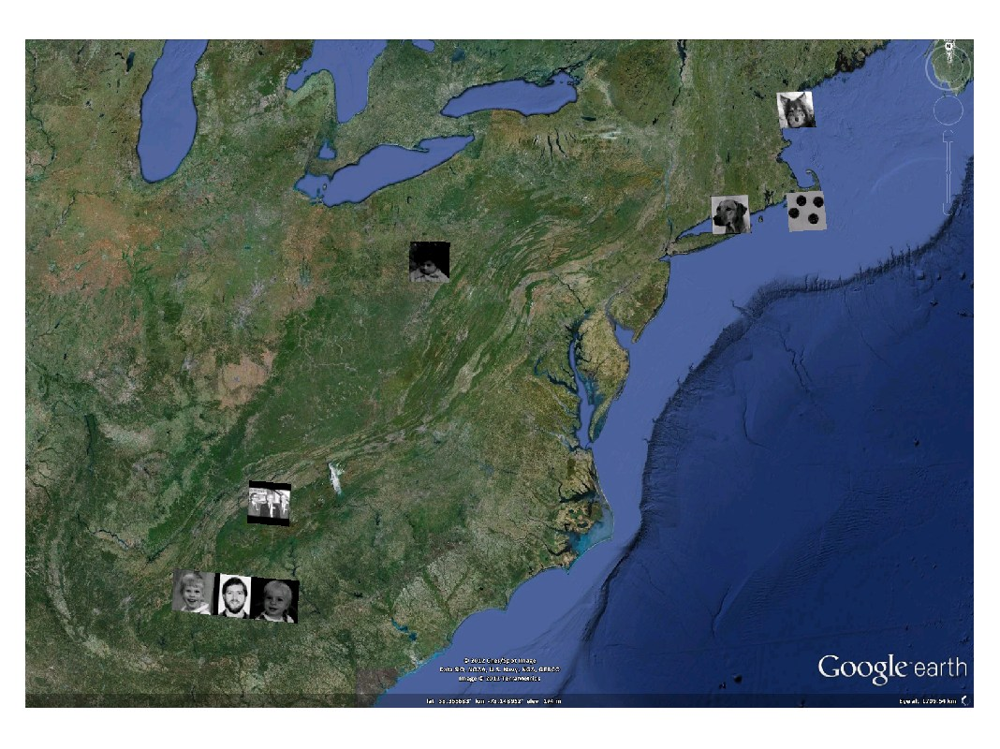

kml.overlay
Overlays an image over the earth surface.
Contents
Syntax
kml.overlay(west, east, south, north, 'file','image.jpg') kml.overlay(...,'PropertyName',PropertyValue,...)
Description
Overlays the image file (specified by the property pair 'file','image.jpg') as a ground overlay in the kml file. The corners of the image are given by inputs west, east, south and north.
To make the overlay transparent, change the alpha portion of the color parameter to a different hex value - eg.: 50% transparent, use kml.overlay(...,'color','80FFFFFF')
The units for west, east, south and north are normally given in degrees, but this can be changed by calling: kml.useDegrees; or kml.useRadians; before plotting.
It is possible to fine tune the overlay properties using name-value pairs:
kml.overlay(...,'PropertyName',PropertyValue,...)
Properties
| Property Name | Type | Description |
|---|---|---|
| 'file' | string | Path to the image that should be overlayed. This is a required input. |
| 'name' | string | Name of the overlay in the kml file |
| 'id' | string | Internal id of this overlay inside the kml |
| 'description' | string | A short description of what the overlay represents |
| 'visibility' | true/false | Control the initial visibility of the overlay |
| 'color' | kml color string | Defines the color of the overlay. Must be a valid hex color string input, in the style AABBGGRR |
| 'altitude' | double | Altitude where the overlay should be plotted. Input in meters. |
| 'altitudeMode' | string | Choose if the altitude value is absolute to the earth model, relative to the ground level, or should be clamped to the ground. Valid inputs: 'absolute', 'relativeToGround', 'clampToGround' |
| 'drawOrder' | double | In case more than one overlay is placed in the same location, this input defines the order on which they should be draw. |
| 'rotation' | double | Specifies a rotation of the overlay about its center. Values can be ±180° or ±pi, depending on the active unit. The default is 0 (north). Rotations are specified in a counterclockwise direction. |
| 'timeStamp' | kml date string | Associates the polygon to a moment in time. Should not be used together with timeSpan. Should be a string in the XML time format (more information available here) |
| 'timeSpanBegin' | kml date string | Defines the moment in time where the polygon starts to exist. Should not be used together with timeStamp. Should be a string in the XML time format (more information available here) |
| 'timeSpanEnd' | kml date string | Defines the moment in time where the polygon finishes to exist. Should not be used together with timeStamp. Should be a string in the XML time format (more information available here) |
Example
% Create a new kml object k = kml('my kml file'); warning('off','MATLAB:nonIntegerTruncatedInConversionToChar') % Place some images overlays over the earth dimg = pow2(get(0,'DefaultImageCData'),47); ee = reshape([47,42,37,36,35,34,33,28,23,18,13,9,5,1,-1,51,46,41,... 36,35,34,33,32,27,22,16,12,8,4,-1,33.8562,43.3,41.3,... 54.7167,23.35,17,21.17,33.8562,49.45,41.3,40.4296,... 35.7143,33.8562,35.0839,-22.007,-85.2163,-70.3504,... -72.3504,20.5167,90.7083,17,72.83,-83.2163,11.0833,-70.3504,... -79.9191,-83.5102,-84.2163,-106.6186,-47.8974],[15 4]); en = reshape([111,[1:2]*0+77,72,77,116,97,121,77,56,46,87,97,116,111,108, ... [1:2]*0+84,105,84,104,32,111,101,45,46,105,110,104,32,100,... [1:2]*0+87,108,87,101,83,117,108,98,46,108,100,101,112,101,... [1:2]*0+32,98,[1:2]*0+32,105,110,97,105,32,107,[1:2]*0+32,... 111,115,[1:2]*0+100,101,111,110,97,103,110,116,111,105,116,... 111,114,116,[1:2]*0+111,114,108,117,109,101,99,115,[1:2]*0+110,... 104,114,99,32,[1:2]*0+103,116,100,109,101,115,111,[1:2]*0+32,115,... 101,105,111,108,[1:4]*0+32,98,115,116,108,115,116,111,32,103,32,... 105,49,50,109,108,[1:2]*0+101,32,105,116,104,110,98,105,97,116,... [1:2]*0+-1,97,111,114,32,108,97,105,101,44,105,110,109,116,... [1:2]*0+-1,116,103,-1,109,105,44,108,[1:2]*0+32,103,[1:2]*0+97,... 108,[1:2]*0+-1,114,111,-1,97,116,32,108,97,71,32,108,114,101,... [1:2]*0+-1,105,[1:2]*0+-1,103,116,98,32,114,105,69,32,101,32,... [1:2]*0+-1,120,[1:2]*0+-1,105,108,121,114,116,118,100,119,108,69,... [1:5]*0+-1,99,101,32,117,32,101,100,97,111,100,[1:5]*0+-1,... [1:2]*0+32,65,108,111,110,105,115,44,100,[1:5]*0+-1,115,69,... 108,101,102,115,110,[1:2]*0+32,105,[1:5]*0+-1,113,100,98,115,... [1:2]*0+32,115,97,109,110,[1:5]*0+-1,117,100,114,-1,77,38,-1,... 108,97,115,[1:5]*0+-1,97,105,101,-1,65,32,-1,119,115,[1:6]*0+-1,... 114,110,99,-1,84,70,-1,97,32,[1:6]*0+-1,101,115,104,-1,76,111,... -1,121,110,[1:8]*0+-1,116,-1,65,114,-1,115,227,[1:8]*0+-1,32,... -1,66,115,-1,32,111,[1:8]*0+-1,68,[1:2]*0+-1,121,-1,116,32,... [1:8]*0+-1,117,[1:2]*0+-1,116,-1,104,111,[1:8]*0+-1,114,... [1:2]*0+-1,104,-1,101,32,[1:8]*0+-1,101,[1:2]*0+-1,101,-1,... 114,100,[1:8]*0+-1,114,[1:4]*0+-1,101,111,[1:14]*0+-1,32,... [1:14]*0+-1,67,[1:14]*0+-1,65,[1:14]*0+-1,65,[1:14]*0+-1,83,... [1:14]*0+-1,79],[15 35]); for i = 1:size(ee,1) fn = sprintf('ee%i.jpg',i); if i<size(ee,1) img = bitslice(dimg,ee(i,1),ee(i,2)); img = img-min(img(:))./(max(img(:))-min(img(:))); imwrite(img*2^6,gray,fn); else r = bitslice(dimg,0,0); g = bitslice(dimg,17,17); b = bitslice(dimg,34,34); imwrite(cat(3,r,g,b),fn) end n = char(en(i,:)); k.overlay(ee(i,4)-0.5,ee(i,4)+0.5,ee(i,3)-0.5/secd(ee(i,3)),ee(i,3)+0.5/secd(ee(i,3)), ... 'file',fn,'color','FFFFFFFF','name',n) end % Save the kml and open it in Google Earth k.run;
This is the result of running this example:
This file is part of the kml toolbox. Copyright 2012 Rafael Fernandes de Oliveira (rafael@rafael.aero)